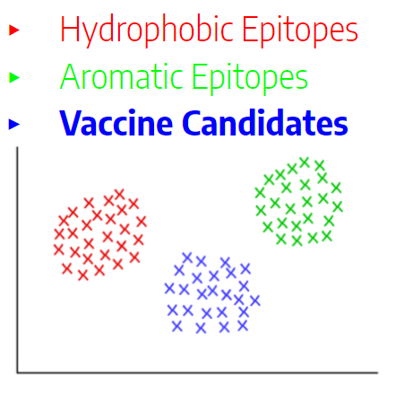
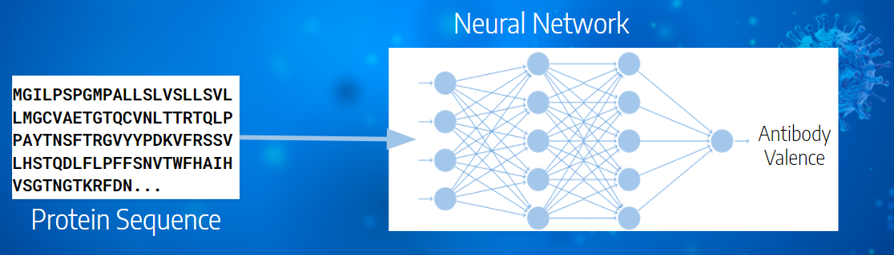

Summary Figure
one infographic prepared by your team that summarizes your project goal
[Brief description of the figures below and the project goal]
 Introduction
discussing the problem you aim to address, your motivation and goal
This project aims to address the problem of selecting which parts of a virus's protein shell can be used to create a vaccine. Instead of manually searching for and testing each epitope — a region of the protein sequence — individually, vaccine developers would use this model to narrow down their options to only those epitopes most likely to produce an immune response.
[Image here?]This should speed up the process of determining which protein sequences should be synthesized and tested as a vaccine in clinical trials. The motivation is that with quicker time to clinical trials and a higher liklihood of those trials producing a functional vaccine, vaccines for new contagions can be produced more quickly, potentially saving lives.
Methods
outlining the dataset you are planning on utilizing and the techniques you intend to apply
We intend to use the COVID-19/SARS B-cell Epitope Prediction database derived from IEDB and UniProt. This database contains 14 features of 14907 epitopes divided into general B-Cells and SARS. It also contains 13 features of 20305 COVID-19 epitopes which we will label with antibody valence during the supervised phase of our project.
For the unsupervised learning phase of our project, we intend to perform feature engineering through two approaches. First clustering our data using clustering algorithms such as KMeans, GMM, and DBScan. We will then perform clustering analysis to determine the efficacy of each approach for our dataset. This can help us find underlying similarities in our data which can help us determine which features are important for predicting vaccine candidacy. Second, we will use Principal Component Analysis to reduce the dimensionality of our data as appropriate.
For the supervised learning phase of our project, we plan to use an ensemble of weak learners such as random forests and decision trees along with a neural network in order to predict antibody valence (and thus vaccine efficacy) given a protein sequence and relevant features. We will split our labeled data into a training and testing set to accomplish this, however, ultimately we intend to classify the unlabelled COVID-19 Epitopes.
Results
describing the results your team is trying to achieve
[High recall - correctly identifying every good candidate for a vaccine...]
Discussion
explaining what would be the best outcome, what it would mean, what is next, etc.
Our ideal output would be a model that predicts the antibody valence of a given protein sequence and relavant traits of the protein. We aim to narrow down the list of epitopes to test for the vaccine of COVID-19 or similar strains of the virus by optimizing our model to dismiss false negatives. With a successful model, scientists and vaccine manufacturers gain a deeper insight into immune responses to COVID-19 and similar strains of the virus. In turn, this results in a faster development of COVID-19 vaccine, and future vaccines of similar viruses. As vaccines are essential for immunity against the virus, this model can in turn eliminate the spread of the COVID-19 virus.
References
list containing at least three references, preferably peer reviewed
Jose L. Sanchez-Trincado, Marta Gomez-Perosanz, Pedro A. Reche, "Fundamentals and Methods for T- and B-Cell Epitope Prediction", Journal of Immunology Research, vol. 2017, Article ID 2680160, 14 pages, 2017. https://doi.org/10.1155/2017/2680160
Kunchur Guruprasad, B.V.Bhasker Reddy, Madhusudan W. Pandit, Correlation between stability of a protein and its dipeptide composition: a novel approach for predicting in vivo stability of a protein from its primary sequence, Protein Engineering, Design and Selection, Volume 4, Issue 2, December 1990, Pages 155–161, https://doi.org/10.1093/protein/4.2.155